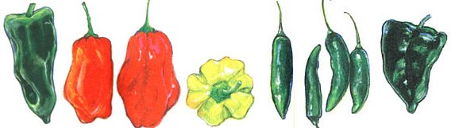

(FROM LEFT) Anaheim: These long, lime green chilies are usually mild (sweet), so there perfect for salads instead of raw green peppers. Since they have a thick skin, they can also be roasted, peeled, and added to recipes. Habanero : The hottest of chilies, this lantern-shaped pepper is usually a yellow-orange color and sometimes red. The heat will sneak up on you, so watch out. I don't recommend eating them raw unless you want to blast off. Serrano: We think the green, bullet-shaped serrano is the perfect; all-around chile. Firm, with a fresh flavor, it's perfect for salsas. Because serranos have consistent heat, we use them the most fluently. Poblano: A skinny version of a green pepper, the poblano is a darker green with just enough hot stuff to make your recipe more interesting. I use these any time I want extra zip in omelettes, bean salads, and many other dishes. If you let your poblanos ripen on the vine until there red (or a brownish-red), they'll get hot, so beware. Poblanos are great roasted and can be frozen roasted or raw in freezer bags for later use. (see ""freezing peppers."") (ILLUSTRATIONS: KHRISTINE REAM)